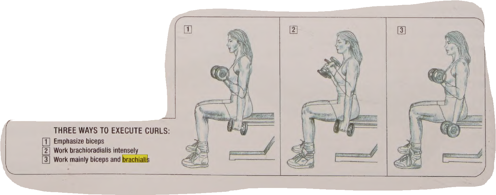

Workout
Monday | Thursday > Back & Biceps & Forearms
Biceps Brachii
The primary function of the biceps brachii is to flex the elbow joint, bringing the forearm towards the upper arm. This action is involved in movements such as lifting, pulling, and bending the elbow. The biceps brachii also plays a role in supinating the forearm, which involves rotating the palm to face upward.
Brachialis
Is a muscle in the upper arm that flexes the elbow. It lies beneath the biceps brachii

Brachioradialis
Is a muscle located in the lateral part of the posterior forearm, the main function is to flex the forearm, especially when the forearm is semi pronated in activities such as hammering.

Exercises Biceps
Sitted curls

Hammer curls

Low pulley curls
Exercises Forearm
Standing wrist curls

Back
Latissimus Dorsi (Lats)
The latissimus dorsi muscle is a broad, flat muscle that occupies the majority of the lower posterior thorax. Is a climbing muscle. With the arms fixed above the head, it can raise the trunk upwards, together with the help of pectoralis major. It is an important muscle in rowing

Trapezius (Traps)
The trapezius, trapezoid, or traps muscle is a muscle in the upper back. It stabilizes the shoulders and enables the neck to move.

Erector Spinae
It is a group of muscles that run along the length of the spine. It allows the body to move from flexed or bent position to an upright extended one. Additionally, the erector spinae assists in the rotation of the spine and good posture.

Rhomboids

Exercises Back
Barbell row (pronated grip)
Chest supported rows with dumbbell

Dumbell Shrugs (sitted and standing) you can roll your shoulders

Bent-over dumbbell

Dumbbell incline row

Cable upright row

Db upright row

Tuesday | Friday > Chest & Shoulders & Triceps
WARM UP
Pectoralis Major (Pecs)
The primary function of your pectoralis major is to bring your arm forward, or shoulder flexion.

Pectoralis Minor
Is triangular in shape and is located under the pectoralis major, and both form the anterior wall of the axilla.Pulls your scapula forwards and downwards

Serratus Anterior
The serratus anterior muscle is a fan-shaped muscle at the lateral wall of the thorax. Its main part lies deep under the scapula and the pectoral muscles. Enables to lift the arm above 90°

Exercises Chest
Incline dumbbell bench press

Low cable crossover

Deep push up

Incline dumbbell fly

Pull over

Dumbbell bench press

Shoulder
- Anterior deltoids: The front delts that help move your arm forward. They connect to your clavicle. You use your front delts if you reach for an object on a shelf.
- Lateral deltoids: Side delts that help move your arm out to the side, as well as up and down. They connect to your acromion, a bony nob on your shoulder blade. You use your side delts if you do jumping jacks.
- Posterior deltoids: Rear delts that help move your arm backward. They connect to the flat surface of your shoulder blade. You use your rear delts if you pitch a baseball.

Exercises Deltoid
Shoulder press (both grips)

Lateral raise

Rear delt row

Dumbbel face pulls standing or sitted


Db upright row
Triceps
Triceps brachii is a three-headed muscle of the arm, spanning almost the entire length of the humerus. The triceps consists of a long, medial and lateral head, that originate from their respective attachments on the humerus and scapula, and insert via a common tendon on the ulna.
The main function of triceps brachii is extension of the forearm at the elbow joint. In addition, its long head contributes to the extension and adduction of the arm

Exercises Triceps
Standing overhead triceps

One-arm overhead triceps

Lying alternating triceps extension

Triceps dips
Wednesday | Friday > Legs
Quadriceps Quads
Hamstring
Calves
Glutes
Exercises leg
Bodyweight drop jump

counterbalance skater squat

Squat 2 sec hold

Goblet squat

Bulgarian squat

Dumbbell stiff leg deadlift

Sliding Leg Curl on Floor

Dumbell RDL

Squat hold calve

Calves raises

Glute bridge

Kickbacks

Lying side leg lift